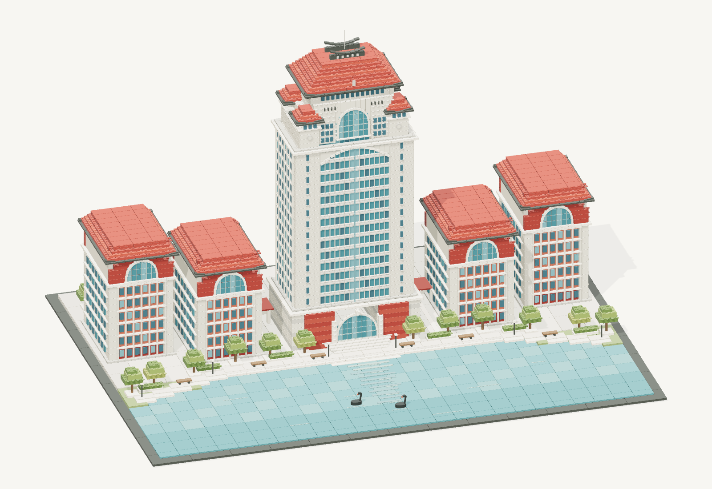

MAKE SOMETHING YOURS
把一张图片，变成积木。
从一个熟悉的形状开始，搭出属于你的想象。
01
带来你的灵感
把灵感，放在这里。拖入图片，或选择上传 / 拍照JPG、PNG、WebP · 最大 15 MB
02
选择你的搭建方式
点击生成后，照片将发送至你配置的 AI 服务进行处理。
正在检查生成服务…
THE CAMPUS COLLECTION内置示例

厦大 · 颂恩楼/ 001
红瓦飞檐，湖畔的一座厦大地标。
逐块搭建自由编辑收藏灵感
继续你的创作
你的模型与修改稿会出现在这里。
BUILD, BRICK BY BRICK
准备模型正在准备积木…
拖动旋转·滚轮缩放
ASSEMBLY第 0 / 115 块
每颗积木，都可以有你的想法。修改后可保存为新版本
YOUR BRICK TOOLKIT
每一种零件，都有可能。
浏览常见积木，选一块，带到你的工作台。
常见零件示例已可用于编辑，生成模型使用的真实零件会加入此目录；颜色与在售情况需另行核对。
零件数据来自 LDraw.org Parts Library · CC BY 2.0 / 4.0
MADE BY YOU
把喜欢的，都留下来。
收藏灵感，也收藏每一次亲手修改。
给你的第一件作品，留个位置。
从颂恩楼示例开始搭建，收藏或保存后就能在这里找到。